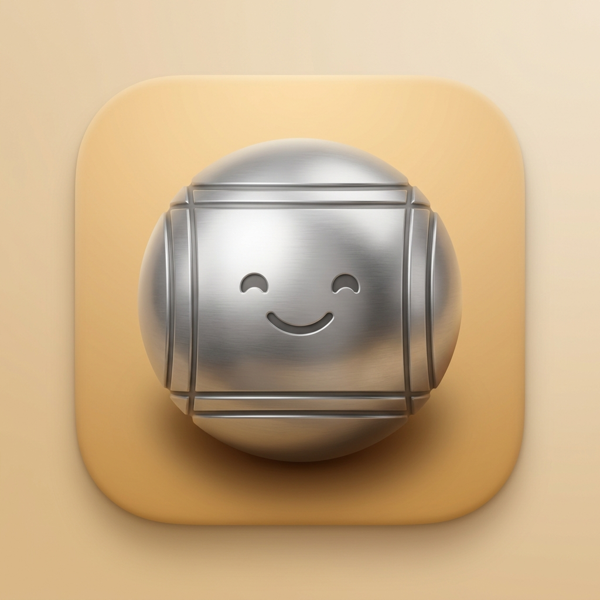

Soporte Técnico y Política de Privacidad
Mantén tu pulgar en la pantalla, balancea tu brazo como si tuvieras una bola real y levanta el pulgar en el aire para soltarla. ¡No sueltes tu dispositivo físico!
Asegúrate de estar en un área bien iluminada. Mueve tu dispositivo lentamente de lado a lado apuntando al suelo para que la cámara pueda mapear la superficie.
Puedes activar el "Tiro Asistido" en la pantalla de configuración de jugadores. Esto te permitirá lanzar simplemente deslizando el dedo en la pantalla.
Petanca AR no recolecta, almacena, ni transmite ningún dato personal fuera de tu dispositivo.
Toda la información del juego (como nombres de jugadores, puntajes y progreso en los minijuegos) se guarda exclusivamente de manera local en tu teléfono.
El acceso a la cámara es utilizado estrictamente en tiempo real por el sistema ARKit de Apple para renderizar el mundo virtual sobre tu entorno. Ninguna imagen o video es capturado, guardado o enviado a nuestros servidores.
Si experimentas algún problema técnico o tienes sugerencias, estamos aquí para escucharte.
Contactar Soporte